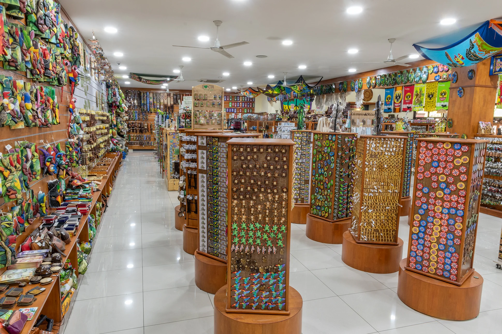
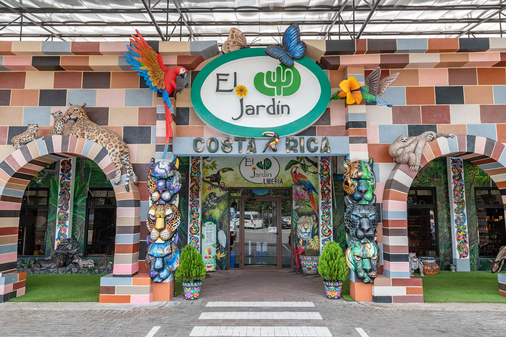
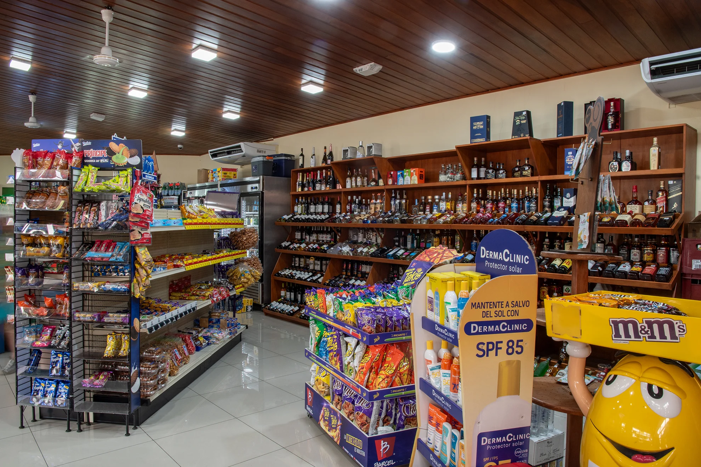
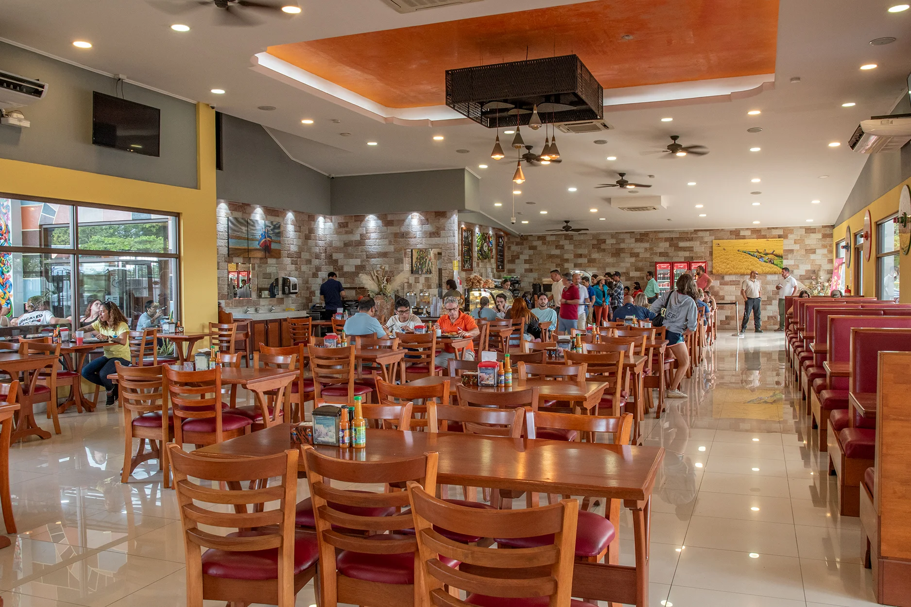

Bienvenidos a "El Jardín" Liberia
Descubre la magia de Liberia en nuestro encantador jardín, donde la naturaleza y la cultura se entrelazan para ofrecerte una experiencia única.




Souvenirs
Encuentra los mejores recuerdos de tu visita a Liberia en nuestra tienda de souvenirs, con una amplia variedad de productos únicos y artesanales.


Restaurante
Disfruta de la auténtica gastronomía local en nuestro restaurante, donde cada plato es una celebración de los sabores y tradiciones de Liberia.
Coffee Roaster
Experimenta el arte del café en nuestra tostadora, donde seleccionamos los mejores granos y los tostamos con pasión para ofrecerte una taza de café excepcional que captura la esencia de Liberia.
Contáctanos
Estamos ubicados 5km del Aeropuerto Daniel Oduber, direccion a playas del coco
¿Tienes preguntas o quieres saber más sobre "El Jardín" Liberia? No dudes en contactarnos. Estamos aquí para ayudarte a planificar tu visita y brindarte toda la información que necesites.
Teléfono: +506 8348 9519
Email: liberia@eljardin.co.cr